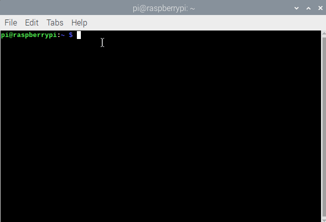

Installation
There are a number of methods you can use to install the Networking Tools.
Depending on the permissions you have on your computer, some methods may not work for you.
Note: you will need to use a computer with Python installed; it is not possible to complete the programming tasks on a tablet or using online integrated development environments (IDEs), e.g. Trinket or repl.it.
Install using pip
You can use the command prompt and pip to install fl_networking_tools for:
Windows
-
Open a command prompt by clicking Start > Windows System > Command Prompt, or by typing 'command' into the start menu's search bar.
-
Type this command and press enter:
pip3 install fl_networking_tools
If you experience problems, have a look at this guide to Using pip on Windows.
macOS
-
Open a terminal window by clicking Applications > Utilities > Terminal, or by typing 'terminal' into the desktop's search bar.

-
Type this command and press enter:
pip3 install fl_networking_tools
Raspberry Pi/
-
Open a terminal window by clicking Menu > Accessories > Terminal.

-
Type this command and press enter:
sudo pip3 install fl_networking_tools
Install for Mu IDE
Note - if you are using the Windows or macOS versions of Mu you will need to update Mu to the latest alpha release and use the Mu Administration, Third Party Packages setup to install fl_networking_tools.
On Windows or macOS:
- Download and install the latest alpha release of Mu
Or
- Update Mu to the latest alpha release
Once you have the latest alpha release of Mu installed on your computer:
1. Open Mu
2. Click on the Administration cog in the bottom right-hand corner
3. Select the Third Party Packages tab
4. Enter fl_networking_tools as the name of the package you wish to install
5. Click OK
Thonny IDE
The Thonny IDE lets you install Python libraries (packages) via its Manage Packages function.
- Use the Manage Packages function to install fl_networking_tools
Downloading the raw files
-
Go to the project repository on GitHub.
-
Click the green "Clone or download" button and then "Download ZIP"

-
Open the zip file
-
Open the
fl_networking_tools-masterfolder, then copy thefl_networking_toolsfolder and paste it into your home directory -
That's it! When you write your Python code, make sure you save it into your home directory.